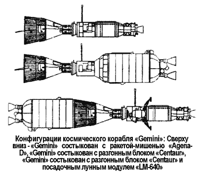
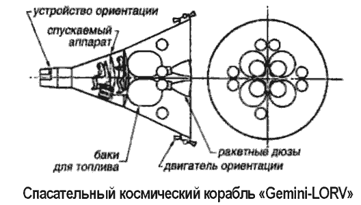
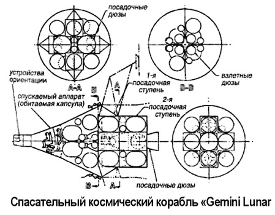

Лунные корабли серии «Gemini»
Совершенно иной вариант лунной экспедиции мог быть реализован в рамках программы «Джемини» («Gemini»).
Открыв любой современный справочник по космонавтике, вы узнаете, что запуски двухместных космических кораблей класса «Джемини» — это этап в подготовке к лунным экспедициям по программе «Аполлон»; что в период с 1964 по 1966 год корабли «Джемини» совершили 12 полетов, 10 из которых были пилотируемыми, а один (на «Джемини-7») продолжался целых 330 часов; что во время этих полетов была проведена серия медико-биологических экспериментов, включая пять выходов астронавтов в открытый космос. Однако ни в одном справочнике вы не найдете информации о том, что создатели «Джемини» замахнулись на большее — отправить свой «орбитальный» корабль на Луну.

В ходе реализации программы «Джемини» выдвигалось несколько проектов лунной экспедиции с использованием этих кораблей. Дело в том, что у «Джемини» имелось очевидное преимущество перед космическими кораблями серии «Аполлон»: возвращаемая капсула была меньше и легче (3,2 тонны против 14,7 тонны у «Аполлона»), а следовательно, могла быть запущена к Луне отработанной ракетой «Titan ЗС» вместо ракеты-носителя «Сатурн-5», который еще требовал доводки в виде летно-конструкторских испытаний.
Космические корабли «Джемини» появились как развитие проекта орбитального корабля «Меркурий Марк 2» («Mercury Mark II»). Ведущие специалисты НАСА рассматривали «Джемини» исключительно как экспериментальный корабль, предназначенный для тренировки экипажей и отработки маневров стыковки и расстыковки. Однако уже в августе 1961 года инженер Джеймс Чемберлен из НАСА при поддержке специалистов авиакомпании «Макдоннелл» выдвинул предложение использовать «Джемини» в качестве лунного космического корабля.
План Чемберлена был такой. Первый беспилотный полет «Джемини-1» на орбиту должен был состояться в марте 1963 года (в действительности он состоялся в апреле 1964 года). Затем следовало провести серию пилотируемых запусков, доведя продолжительность пребывания астронавтов на орбите до семи суток (астронавтов-шимпанзе — до 14 суток) и отрабатывая процесс стыковки с ракетой-мишенью «Agena-D». В ноябре 1964 года «Джемини-11» должен был совершить пробную стыковку на высокой околоземной орбите с разгонным блоком «Кентавр» («Centaur»). Затем, в марте 1965 года, «Джемини-13» с двумя астронавтами на борту состыковался бы с разгонным блоком и совершил первый в истории человечества пилотируемый облет Луны.
Проект, предложенный Чемберленом и фирмой «Макдоннелл», был намного дешевле аналогичного этапа, предусмотренного в рамках программы «Аполлон». Во-первых, разгонный блок «Кентавр» выводился на орбиту проверенным в деле и более дешевым носителем «Титан-2». Во-вторых, масса и конструкция самого «Джемини» менялась мало: он становился всего лишь на 270 килограммов тяжелее за счет установки резервной системы навигации и дополнительной теплозащиты, которая поглощала бы избыток тепла, возникающий при торможении в атмосфере со скоростью 11 км/с вместо штатных 8 км/с. Согласно расчетам стоимость всей программы «Джемини» увеличивалась на 60 миллионов долларов, но зато при этом многократно возрастала практическая отдача.
Любопытно, что поначалу Чемберлен выдвинул еще более дерзкий проект: он планировал уложиться всего в девять рейсов кораблей «Джемини», последний из которых должен был закончиться облетом Луны в мае 1964 года! При этом программа подорожала бы всего на 8,5 миллиона долларов.
Однако через неделю он «одумался» и пришел к руководству НАСА с более взвешенным предложением. Но и оно не прошло. Никто не собирался менять утвержденную программу ради «сумасбродных идей».
Однако самому рационализатору идея казалась слишком привлекательной, чтобы просто так от нее отмахнуться.
И месяцем позже Джеймс Чемберлен придумал еще более честолюбивый план. На этот раз он предложил не только облететь Луну на «Джемини», но и совершить мягкую посадку на ней. При этом его альтернативная программа «Джемини-Кентавр-ЛМ» («Gemini-Centaur-LM») должна была обойтись в 20 раз дешевле программы «Аполлон». Изюминка состояла в том, чтобы применить посадочный модуль открытого типа — астронавт в скафандре фактически сидел на баке с топливом. Вес такого модуля составил бы всего 4,4 тонны, а полная масса выводимого к Луне космического корабля — не более 13 тонн против 68 тонн у комплекса «Аполлон-Нова» («Apollo-Nova»), в то время разрабатываемого НАСА. В качестве разгонного блока Чемберлен планировал использовать ракету-носитель «Saturn С-3».
Понятно, что при этом расписание полетов претерпевало известные изменения, но Чемберлен был уверен, что облегченный посадочный модуль «Джемини-16» (кстати, придуманный в Исследовательском центре имени Лэнгли), управляемый одним астронавтом, сможет совершить прилунение уже в январе 1966 года! А самое главное, что для реализации всей этой программы понадобится всего лишь шестнадцать ракет «Титан-2» и две ракеты «Сатурн С-3».
Однако, несмотря на поддержку, оказанную Чемберлену специалистами фирмы «Макдоннелл», руководство НАСА предпочитало не замечать инициативного конструктора, ведь схема прямого полета с использованием сверхтяжелого носителя получила одобрение на уровне президента и правительства.
Последнюю попытку переубедить чиновников и изменить ситуацию в свою пользу Чемберлен предпринял в конце сентября 1961 года. Сохранив предложенный ранее график, Чемберлен сознательно завысил бюджет программы (теперь расходы составляли 706 миллионов долларов вместо 356 миллионов, отпущенных на «Джемини») и усовершенствовал конструкцию открытого посадочного модуля, снизив его массу до 1800 килограммов. Но и этот проект не прошел.
Только когда Чемберлен убрал из своего плана лунные рейсы, его календарный график был одобрен как основа для орбитальной программы «Джемини».
Кстати, если бы НАСА и американское правительство поддержали проект Чемберлена и «Макдоннелл» в полном объеме, то высадка астронавта на Луну все равно состоялось бы не раньше 1967 года. Это было обусловлено задержками в доработке ракеты-носителя «Титан-2» и посадочной системы «Джемини». Контрольный 14-дневный орбитальный полет космического корабля «Джемини-7» состоялся только в декабре 1965 года, а не в январе 1964 года, как запланировал Чемберлен.
Следующий из известных проектов использования кораблей «Джемини» в лунной программе был выдвинут на рассмотрение в сентябре 1962 года. Еще летом НАСА попросило у Лаборатории космической техники и у фирмы «Макдоннелл» проанализировать возможность применения кораблей «Джемини» в программе «Аполлон» в качестве транспортных и спасательных средств. В течение восьми недель был разработан эскизный проект спасательного лунного корабля на основе «Джемини», однако из-за отсутствия финансирования дальше дело не двинулось.
В марте 1964 года вновь был поднят вопрос о том, что если в силу различных причин график программы «Аполлон» будет сорван и возникнет угроза отставания от «русских» в лунной «гонке», можно будет попытаться отправить один из кораблей «Джемини» на ракете-носителе «Сатурн 1Б» («Saturn IB») в облет Луны. Однако Вернер фон Браун и другие руководители программы «Аполлон» не были заинтересованы в проектах, подрывающих веру в правильность выбранной схемы. Под их давлением в июне 1964 года Штаб НАСА выпустил распоряжение, согласно которому официально запрещалось обсуждать варианты облета Луны с использованием космических кораблей «Джемини».
Но и эти экстраординарные меры не смогли задавить вольную конструкторскую мысль. Годом позже астронавт Чарлз Конрад совместно с инженерами из авиакомпаний «Мартин» и «Макдоннелл» разработал новый проект облета Луны, названный «Джемини-ЛЕО» («Gemini-LEO» — от «Large Earth Orbit»). 24 июня 1965 года очередным «нарушителям спокойствия» удалось организовать конференцию в Центре пилотируемых полетов (Хьюстон, штат Техас), собравшую представителей вышеупомянутых фирм и НАСА. На этой встрече инженеры авиакомпаний выдвинули на обсуждение детальное предложение, суть которого сводилась к тому, что имеется вполне реальная возможность запустить к апрелю 1967 года доработанный вариант корабля «Джемини» в полет вокруг Луны. Запущенный с помощью носителя «Титан-2» космический корабль с двумя астронавтами на борту должен был состыковаться на орбите с модификацией ракеты «Титан ЗС», получившей название «Двойная транс портная ступень» («Double Transtage»). Согласно проекту «Двойная транспортная ступень» действительно состояла из двух блоков, один из которых служил для маневрирования на орбите и сбрасывался после стыковки с «Джемини», а второй выступал в качестве разгонного транспортного средства, который доставит пилотируемый корабль к Луне. Этот рейс мог бы состояться сразу после окончания программы орбитальных полетов «Джемини». Его общая стоимость оценивалась в 350 миллионов долларов.
Авторы проекта полагали, что эксперименты по стыковке и расстыковке «Джемини» с ракетой-мишенью «АдженаД» создадут необходимую основу для быстрой реализации первого «лунного рейса». А астронавту Конраду даже удалось заинтересовать этим проектом членов Конгресса.
Тем не менее реакция руководства НАСА вновь была резко отрицательной. Администратор НАСА Джеймс Веб информировал авторов проекта, что любые дополнительные фонды, которые Конгресс выделит на лунную программу, будут потрачены на интенсификацию работ над «Аполлоном».
После продолжительной закулисной борьбы Чарлз Конрад все же сумел получить одобрение НАСА на экспериментальный полет «Джемини-11», в ходе которого космический корабль состыковался с ракетой «Аджена-Д», после чего вся космическая система была выведена на рекордную по тем временам орбиту — 1570 километров в апогее. Этот прыжок на высокую орбиту — все, что осталось от программы создания лунных кораблей серии «Джемини»…

Пожар на «Аполлоне-1», случившийся 27 января 1967 года и приведший к страшной смерти астронавтов Вирджила Гриссома, Эдварда Уайта и Роджера Чаффи, заставил НАСА пересмотреть всю концепцию безопасности, разработанную в рамках космической программы.
Оказалось, что выбранная схема полета «Аполлона» к Луне достаточно сложна в смысле обеспечения безопасности и вероятность гибели экипажа, который мог застрять на окололунной орбите или на поверхности Луны, относительно высока. В этой ситуации авиакомпания «Макдоннелл» предложила вернуться к концепции спасательного корабля «Джемини-ЛОРВ» («Gemini-LORV» — от «Lunar Orbit Rescue Vehicle»), которая обсуждалась в 1962 году.
Теперь специалисты «Макдоннелл» изучили три варианта спасательной системы.
Первая система «Аппарат спасения с лунной орбиты» («Gemini Lunar Orbit Rescue Vehicle») могла бы спасти экипаж «Аполлона», оказавшийся в плену лунной орбиты. При этом корабль «Джемини» в беспилотном варианте должен был запускаться на окололунную орбиту ракетой-носителем «Сатурн-5» («Saturn V»). После ее достижения он автоматически сблизился бы с терпящим катастрофу «Аполлоном», и экипаж последнего получал бы возможность перебраться на борт спасательного корабля, чтобы вернуться на Землю.
Вторая система «Аппарат защиты и жизнеобеспечения на лунной поверхности» («Gemini Lunar Surface Survival Shelter» или «Gemini Lunar SSS») являлась по сути облегчен ным вариантом обитаемой лунной станции. В случае если бы посадочный модуль корабля «Аполлон» не смог взлететь с поверхности Луны, «Джемини-ССС» сбрасывался бы в место посадки, чтобы экипаж мог перебраться в него и спокойно дожидаться спасательной экспедиций.
Третья система «Лунный спасательный космический корабль» («Gemini Lunar Surface Rescue Spacecraft» или «Gemini Lunar SRS») представляла собой беспилотный космический корабль «Джемини», управляемый дистанционно и способный совершить прилунение в заданной точке. Она состояла из трех ступеней: ступени схода с орбиты, посадочной ступени и ступени взлета с поверхности Луны. Возвращаемая капсула «Джемини», интегрированная в систему, имела увеличенный пассажирский салон, рассчитанный на двух астронавтов. Дополнительная конфигурация системы «Джемини-СРС» включала два приборно-агрегатных отсека «Аполлона» и еще один посадочный модуль.

Спасательный корабль «Джемини-СРС» имел следующие габариты: полная длина — 12,6 метра, максимальный диаметр — 6,2 метра, полный обитаемый объем — 5 м3, полная масса — 46 тонн, масса топлива — 36,4 тонны.
Проведя обстоятельный анализ вышеописанных вариантов спасательной системы, специалисты фирмы «Макдоннелл» пришли к выводу, что беспилотные корабли класса «Джемини» при соответствующей доработке могли выполнить все три задачи спасения экипажей «Аполлона».
Эта последняя попытка реанимировать проекты лунных кораблей «Джемини» также потерпела неудачу. Как раз в то время было объявлено о значительном сокращении расходов на программу «Аполлон». У НАСА больше не было денег на покупку дополнительных ракет-носителей и разработку новых космических кораблей. В конце концов пришлось отказаться даже от самой идеи космической спасательной системы. Астронавтам НАСА, летавшим к Луне на космических кораблях «Аполлон», приходилось уповать на работоспособность всех систем и молиться Богу, чтобы он не дал им умереть вдали от Земли, без надежды на помощь и спасение…